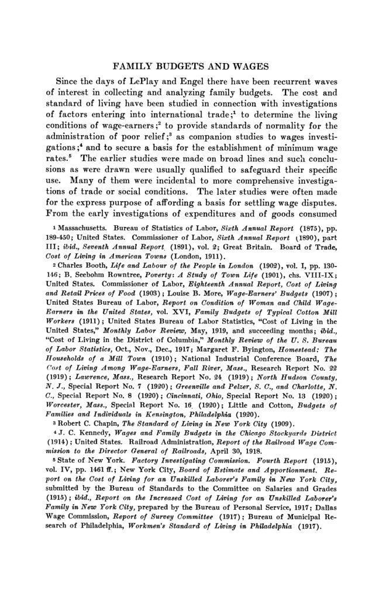

Stecker e a família que o orçamento inventou
Leitura: 9 min
Margaret Loomis Stecker examina os orçamentos de família usados nas arbitragens salariais de 1920 e conclui que padrão, lugar e família-tipo foram escolhidos sem conferência com os fatos.


Em julho de 1920, a United States Anthracite Coal Commission, encarregada de arbitrar os salários dos mineiros de antracito, recebeu como prova dezesseis estudos de orçamento familiar. Margaret Loomis Stecker, de Nova York, considera que nenhum tribunal havia examinado com tanto cuidado a relação entre orçamento de família e salário, e usa o caso como ponto de partida de seu artigo na American Economic Review de setembro de 1921.
O artigo trata de um instrumento antigo posto a serviço novo. Desde Le Play e Engel, lembra a autora, orçamentos de família foram coletados para estudar o comércio internacional, as condições de vida dos assalariados, a assistência aos pobres e o salário mínimo. Até a guerra, quase não se usaram nos Estados Unidos para reajustar salários. Em 1915, um estudo de custo de vida foi feito para fixar os salários dos trabalhadores não qualificados da prefeitura de Nova York; a partir de 1917, vieram as arbitragens, os casos do National War Labor Board e, em 1920, as disputas de bondes, ferroviários e mineiros, decididas em grande parte pela exatidão dos números de custo de vida.
O que estava em disputa no antracito?
O argumento dos mineiros, apresentado por W. Jett Lauck, era que o princípio de fazer os salários acompanharem o custo de vida fora uma medida de guerra e devia dar lugar a outro: todo assalariado tem direito a um salário vital, que cubra as necessidades físicas e deixe algum saldo para conforto, saúde, lazer e educação. Os orçamentos que até então mediam o mínimo, como o de Chapin, de 1907, e o da comissão de fábricas do estado de Nova York, de 1914, passaram a ser descritos como mera subsistência.
Os operadores responderam que não havia divergência sobre o princípio, só sobre o que constitui um salário vital. Os orçamentos apresentados não eram de famílias da região; o teste justo seria examinar a prosperidade da comunidade onde a indústria domina, e citaram o aumento dos depósitos de poupança na região do antracito. Stecker reduz o problema a três perguntas: a adequação da renda pode ser medida por orçamentos? Se pode, é preciso sempre um estudo local? Ou um estudo feito num lugar serve de medida em outro?
Mínimo ou ideal?
A autora contesta que os orçamentos antigos fossem de subsistência. Um sinal está na parcela gasta com despesas diversas, onde fica a maior margem para o que não é estritamente essencial. Quando a família assalariada média gastava cerca de 20% da renda nesses itens, as famílias de Mrs. More gastavam 21,5%; as de Chapin com renda de US$ 800 a US$ 900, 16%; as de Kennedy, 15,1%. Eram orçamentos modestos, mas incluíam lazer, médico, seguro, igreja, sindicato e transporte.
O novo padrão, surgido em 1917 com os nomes de mínimo de conforto ou de saúde e decência, partia de outro grupo. O orçamento de Peixotto para San Francisco falava do trabalhador típico; o da arbitragem dos bondes de Seattle e Tacoma vinha de trabalhadores qualificados; o de Ogburn para o National War Labor Board, de operários de estaleiros de Nova York com rendas mais altas. Os testes objetivos de alimentação e moradia perdiam peso, e a opinião do pesquisador sobre o que seria adequado decidia conteúdo e custo. Tais orçamentos, conclui, retratam um padrão médio ideal, não o nível abaixo do qual nenhuma família deveria cair.
Um orçamento viaja de uma cidade para outra?
Para Stecker, esse foi o erro mais importante. Três pesquisas feitas ao mesmo tempo e pelos mesmos métodos em Nova York e Buffalo deram resultados distintos. Na pesquisa do Bureau of Labor Statistics de 1918, Scranton, a única cidade da região do antracito incluída, teve custo médio de US$ 1.844,99 para uma família de 5,2 pessoas, contra US$ 1.525,66 em Nova York e US$ 1.460 em Buffalo. Nas 92 localidades pesquisadas, o custo ia de US$ 1.167,12 em Chippewa Falls, Wisconsin, a US$ 1.919,40 em Bisbee, Arizona.
Os aumentos também divergiam. Segundo o Bureau, o custo de vida do país subira 110,2% entre dezembro de 1914 e junho de 1920; em Detroit, 136%; em San Francisco, 96%. Aplicar um índice geral a uma cidade específica podia dar um retrato muito errado. O orçamento em quantidades preparado para a família de um funcionário público em Washington, que deveria ser precificado em qualquer lugar, esbarrou em cidades mineiras onde certos artigos simplesmente não existiam no comércio local.
Na arbitragem da Boston Elevated Railway Company, na primavera de 1920, os empregados rejeitaram orçamentos que refletiam as condições locais porque não alcançavam o padrão de Washington, embora este não pudesse ser realizado ali. A companhia sabia, diz a autora, que milhares de homens em Boston sustentavam a família decentemente com 75 centavos por hora ou menos, valor que o representante dos empregados considerava abaixo da subsistência.
Quem é a família de cinco?
O segundo problema, menos visível, é a família-tipo: pai como único assalariado, mãe e três filhos menores de 14 anos. Stecker reúne as evidências. O censo de 1910 dava 4,5 pessoas por família. Nos estudos de assalariados sem seleção prévia, a média fica perto de cinco, mas inclui filhos mais velhos, parentes, pensionistas e outras rendas. No estudo federal de 1901, com 25.440 famílias e média de 4,88 pessoas, as famílias classificadas como normais, sem filhos acima de 14 anos nem pensionistas, eram 11.156, ou 44% do total, com média de 3,96 pessoas e custo por pessoa maior: US$ 157,13, contra US$ 143,29.
“Há comparativamente poucas famílias de assalariados inteiramente dependentes dos ganhos do chefe da família.” (“There are comparatively few families of wage-earners who are entirely dependent on the earnings of the head of the family.”)
A frase é de Louise B. More, citada pela autora. Nas 200 famílias de More, o pai respondia por 63,5% da renda média; entre as de Kennedy, nos currais de Chicago, por 54,5%. Na pesquisa do British Board of Trade de 1909, a parcela do pai caía de 93,2% nas famílias de menor renda para 44,4% nas de maior. Dados da Metropolitan Life Insurance Company sobre 663 famílias mostraram média de 2,4 filhos, dos quais só 34% tinham menos de 16 anos.
As médias de cinco pessoas, além disso, eram muitas vezes produzidas pela seleção. Chapin escolheu famílias com dois a quatro filhos menores de 16 anos e descartou 106 questionários, um sexto do total, por terem menos de quatro ou mais de seis pessoas. As instruções da pesquisa federal de 1918 exigiam que ao menos 75% da renda viesse do chefe ou de quem entregasse todos os ganhos ao fundo familiar e excluíam famílias com pensionistas; a média final de 4,9 pessoas pouco diz, portanto, sobre o tamanho real das famílias.
Quando o trabalho da mulher e dos filhos indica pobreza?
Adotar a família de cinco com um só assalariado implica que o salário do pai deve cobrir sozinho o padrão mínimo. Stecker mostra por que isso leva a perguntas sem resposta pronta. Na maioria dos estados americanos havia pouca oportunidade de empregar menores de 14 anos; se os filhos que trabalham têm 14 anos ou mais, a família deixa de ser normal. Dezesseis anos é a idade usual da licença para trabalhar, mas protege saúde e educação, não define situação econômica. Estudos sobre a saída da escola indicam outros fatores além da pobreza.
O mesmo vale para o trabalho das mulheres casadas e para os pensionistas. O British Board of Trade notou que cerca de um terço dos chamados pensionistas eram, na verdade, filhos mais velhos que entregavam uma quantia fixa à família, e que em muitos casos a pensão servia para pagar a compra da casa ou alugar uma moradia maior. A autora sugere um estudo que diga se a alta de salários de 1914 a 1920 manteve mais crianças na escola e reduziu o emprego de mulheres casadas; até então, ninguém o fizera.
Suas conclusões são cinco: o uso extenso de orçamentos para fixar salários é novo no país; a troca do mínimo antigo por um padrão de trabalhadores qualificados exige estudo cuidadoso da base do mínimo; medir uma comunidade por padrões de outra pôs em dúvida todo o método; a família de cinco com um só assalariado não é a mais representativa; e o descrédito resultante pede novos padrões ajustados aos fatos ou outro meio de medir o custo de vida.
Na minha leitura
Na minha leitura, o artigo de Stecker é uma aula sobre amostragem antes que a palavra se tornasse comum nos debates salariais. Ela mostra que uma média pode ser produzida pelo critério de seleção, como no caso de Chapin, e que uma unidade de medida escolhida por conveniência passa a ser tratada como descrição da realidade. O ponto não é que o orçamento seja inútil, mas que o resultado depende de quem foi incluído, onde e com que propósito.
O texto também separa duas perguntas que costumam vir juntas: quanto custa um padrão de vida e quem, dentro da família, deve pagá-lo. A primeira é empírica e local; a segunda envolve normas sobre o trabalho de mulheres e filhos que nenhum orçamento resolve sozinho. Ao distinguir as duas, Stecker deixa claro o que a estatística pode e o que não pode decidir numa arbitragem.
Glossário
- Orçamento de família
- registro ou estimativa das despesas de uma família por categoria, usado para medir padrão e custo de vida.
- Salário vital
- salário que cobre as necessidades físicas e deixa margem para algum conforto, saúde e educação.
- Orçamento em quantidades
- lista de bens e serviços em quantidades e qualidades definidas, para ser precificada em diferentes lugares e datas.
- Família-tipo
- unidade padrão dos orçamentos: pai assalariado, mãe e três filhos menores de 14 anos.
Fontes
- Family Budgets and Wages — Margaret Loomis Stecker (New York City) (pp. 447–465). JSTOR · Internet Archive (PDF)
- Edição completa, com os demais artigos: Nº 171 do Arquivo.
Documento em domínio público (EUA, publicado antes de 1931), via JSTOR Early Journal Content e Internet Archive. Resumo e comentário do autor deste site, sem afiliação com a American Economic Association. Encontrou um erro? Escreva: a correção é publicada no próprio texto, com data.
↑ Nº 171 · Salário real, orçamento de família e o limite da taxa de redesconto Youngman e a taxa que seguia o mercado →